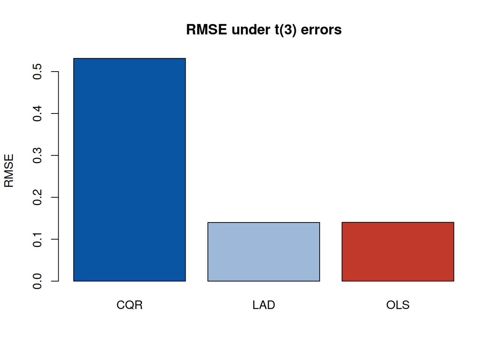
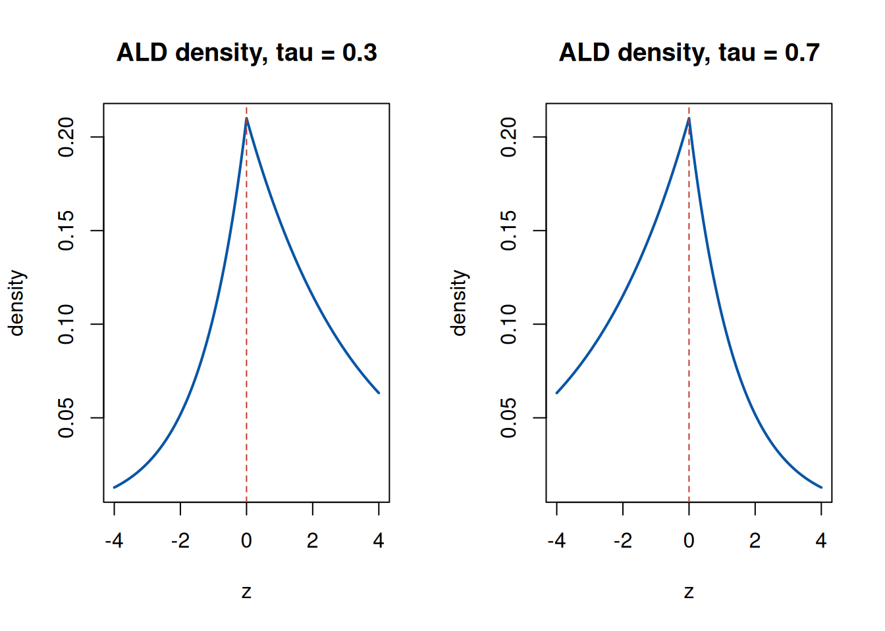

第 5 分层数据鲁棒回归：复合分位与 EM
对应论文：Hou Jian, Meng Tan, Tian Maozai. Hierarchical composite quantile regression with adaptive Lasso. Journal of Statistical Planning and Inference, 2026, 245, 106390 (Hou, Meng, and Tian 2026a)。本章是 论文的补充材料：补齐”分位损失 ⇔ 不对称拉普拉斯分布”的等价性证明、 EM 算法 E 步公式的完整推导，以及论文直接使用但未展开的多元正态 条件分布工具。
5.1 背景与动机
问题起源。 分层（嵌套）数据——学生嵌套于班级、患者嵌套于医院、 重复测量嵌套于个体——是纵向与面板研究的常态。经典工具是线性混合 模型（LMM）：\(Y_{ij} = X_{ij}Z_j\gamma + X_{ij}v_j + \varepsilon_{ij}\)， 其中 \(v_j\) 为随机效应。LMM 的两个局限：
- 均值回归的脆弱性：\(v_j, \varepsilon_{ij}\) 假设正态，重尾误差 或离群值会显著拉偏固定效应估计；
- 单一切片视角：均值只能描述条件分布的中心，无法回答 “高分组与低分组的差异是否在不同分位水平上不同”。
鲁棒 + 分层 + 多分位的三重需求，把文献引向两条线的交汇： 分位回归（QR）提供鲁棒性与分位视角；复合分位回归（CQR， (Zou and Yuan 2008)）把多个分位联合估计以提升效率；混合模型提供 分层结构。论文的 HCQR 是这三者的结合，并用 EM 算法统一估计 固定效应与方差分量。
5.2 论文工作概览
论文在两层分层模型上定义复合分位目标（多个 \(\tau_k\) 共享斜率）， 用”E 步正态、M 步 ALD”的混合 EM 估计固定效应与方差分量，用自适应 Lasso 做组级变量选择，并证明估计量的相合性、渐近正态性与 oracle 选择性质。本章补充等价性证明与 E 步推导。
5.3 数学工具详解
5.3.1 分位损失与不对称拉普拉斯分布的等价性
论文的关键技巧是：最小化 check loss 等价于最大化 ALD 似然。 这里给出完整推导。
设 \(Z \sim \mathrm{ALD}(0, \sigma, \tau)\)，密度为
\[ f(z) = \frac{\tau(1-\tau)}{\sigma} \exp\Bigl\{-\frac{\rho_\tau(z)}{\sigma}\Bigr\}, \]
其中 \(\rho_\tau(z) = z(\tau - \mathbf 1\{z < 0\})\) 正是 check loss （验证：\(z \ge 0\) 时指数项为 \(-\tau z/\sigma\)，\(z<0\) 时为 \(-(1-\tau)(-z)/\sigma\)，两段斜率不同，密度在 \(z=0\) 处有尖峰）。 对回归模型 \(Y_i = x_i^\top\beta + z_i\)，\(z_i\) 独立同分布 \(\mathrm{ALD}(0, \sigma, \tau)\)，则似然为
\[ L(\beta, \sigma) = \prod_i \frac{\tau(1-\tau)}{\sigma} \exp\Bigl\{-\frac{\rho_\tau(Y_i - x_i^\top\beta)}{\sigma}\Bigr\}. \]
固定 \(\sigma\) 最大化 \(L\) ⇔ 最小化 \(\sum_i \rho_\tau(Y_i - x_i^\top\beta)\) ——分位回归估计量就是 ALD 的 MLE。这个等价性的用处：check loss 没有”似然”，EM 需要似然；有了 ALD，论文可以在似然框架内 处理随机效应（潜在变量），同时保持分位目标的鲁棒性。注意等价性 只用于算法构造：估计量的统计性质由 check loss 目标决定，不 依赖 ALD 假设——论文特别强调这一点。
5.3.2 多元正态的条件分布：E 步的地基
论文 E 步需要 \(v_j \mid Y_j\) 的条件分布。设 \(\boldsymbol{x} \sim N(\boldsymbol{\mu}, \boldsymbol{\Sigma})\)， 分块 \(\boldsymbol{x} = (\boldsymbol{x}_1^\top, \boldsymbol{x}_2^\top)^\top\)， \(\boldsymbol{\mu} = (\boldsymbol{\mu}_1^\top, \boldsymbol{\mu}_2^\top)^\top\)， \(\boldsymbol{\Sigma} = \begin{pmatrix} \boldsymbol{\Sigma}_{11} & \boldsymbol{\Sigma}_{12} \\ \boldsymbol{\Sigma}_{21} & \boldsymbol{\Sigma}_{22} \end{pmatrix}\)。 则
\[\begin{equation} \boldsymbol{x}_1 \mid \boldsymbol{x}_2 \sim N\!\bigl(\boldsymbol{\mu}_1 + \boldsymbol{\Sigma}_{12} \boldsymbol{\Sigma}_{22}^{-1}(\boldsymbol{x}_2 - \boldsymbol{\mu}_2),\ \boldsymbol{\Sigma}_{11} - \boldsymbol{\Sigma}_{12} \boldsymbol{\Sigma}_{22}^{-1}\boldsymbol{\Sigma}_{21}\bigr). \tag{5.1} \end{equation}\]mal) \end{equation}
推导：令 \(\boldsymbol{u} = \boldsymbol{x}_1 - \boldsymbol{\Sigma}_{12} \boldsymbol{\Sigma}_{22}^{-1}\boldsymbol{x}_2\)，验证 \(\mathrm{Cov}(\boldsymbol{u}, \boldsymbol{x}_2) = 0\)（正态下等价于 独立），再写出 \(\boldsymbol{x}_1 = \boldsymbol{u} + \boldsymbol{\Sigma}_{12}\boldsymbol{\Sigma}_{22}^{-1}\boldsymbol{x}_2\) 的条件均值。公式里出现的 \(\boldsymbol{\Sigma}_{12}\boldsymbol{\Sigma}_{22}^{-1}\) 是”回归系数”：条件均值 = 无条件均值 + 用 \(\boldsymbol{x}_2\) 预测 \(\boldsymbol{x}_1\) 的最佳线性预测。
5.3.3 EM 算法：为什么迭代单调上升
EM 处理含潜在变量（论文的 \(v_j\)）的似然最大化。完整数据对数似然 \(\ell_c(\theta)\) 不可观测，但条件期望 \(Q(\theta \mid \theta^{(t)}) = \mathrm{E}[\ell_c(\theta) \mid \text{data}, \theta^{(t)}]\) 可计算。EM 的每次迭代：
- E 步：计算 \(Q(\theta \mid \theta^{(t)})\)（论文：由 (5.1) 得 \(v_j \mid Y_j\) 的条件分布）；
- M 步：\(\theta^{(t+1)} = \arg\max_\theta Q(\theta \mid \theta^{(t)})\)。
由 Gibbs 不等式，\(\ell(\theta^{(t+1)}) \ge \ell(\theta^{(t)})\)—— 观测似然单调不减，所以 EM 收敛（到局部极大或鞍点）。论文的 混合设定（E 步用正态工作模型、M 步用 ALD）不改变单调性，只改变 \(Q\) 的具体形式；论文还指出该混合不影响 \(\gamma\) 的一致性。
5.4 论文未展示的详细推导
5.4.1 E 步公式的完整推导
论文直接给出 \(T^*\) 与 \(v_j^*\)。这里补齐。联合分布：
\[ \begin{pmatrix} Y_j \\ v_j \end{pmatrix} \sim N\!\left(\begin{pmatrix} X_j Z_j \gamma \\ 0 \end{pmatrix},\ \begin{pmatrix} X_j T X_j^\top + \sigma^2 I & X_j T \\ T X_j^\top & T \end{pmatrix}\right). \]
套用 (5.1)，取 \(\boldsymbol{x}_1 = v_j\)、\(\boldsymbol{x}_2 = Y_j\)：
- 条件均值：\(v_j^* = 0 + T X_j^\top (X_j T X_j^\top + \sigma^2 I)^{-1} (Y_j - X_j Z_j \gamma)\)；
- 条件协方差：\(T^* = T - T X_j^\top (X_j T X_j^\top + \sigma^2 I)^{-1} X_j T\)。
矩阵求逆引理（Woodbury 恒等式）：
\[ (A + B C B^\top)^{-1} = A^{-1} - A^{-1} B (C^{-1} + B^\top A^{-1} B)^{-1} B^\top A^{-1}, \]
取 \(A = \sigma^2 I\)、\(B = X_j\)、\(C = T\)，可把两个公式改写为论文的 形式：
\[ T^* = \sigma^2\bigl(X_j^\top X_j + \sigma^2 T^{-1}\bigr)^{-1}, \qquad v_j^* = \sigma^{-2} T^* X_j^\top\bigl(Y_j - X_j Z_j \gamma\bigr). \]
两式是等价的（验证：Woodbury 引理的两种写法），但论文的形式 更优：\(X_j^\top X_j + \sigma^2 T^{-1}\) 是 \(L \times L\) 的系数维 矩阵（\(L\) 小），而直接形式含 \(n_j \times n_j\) 的逆（\(n_j\) 大）。 当组内样本量远大于系数维数时，计算量从 \(O(n_j^3)\) 降到 \(O(L^3)\)。
5.4.2 复合分位目标的梯度结构
论文目标（式 7）对 \(\gamma\) 的次梯度是各分位次梯度之和：
\[ \partial_\gamma = -\sum_{k=1}^{K} \sum_{j=1}^{J} X_{ij}Z_j \cdot \bigl[\tau_k - \mathbf 1\{r_{ijk} < 0\}\bigr], \qquad r_{ijk} = Y_{ij} - b_{\tau_k} - X_{ij}Z_j\gamma - X_{ij}v_j, \]
即每个分位贡献一个”符号失衡”项。\(\tau_k\) 对称分布在 0.5 两侧时， 符号项相互抵消一部分——这是 CQR 相比单分位方差更小的机制 （(Zou and Yuan 2008) 的渐近方差公式里，信息矩阵是所有分位的 加权和）。
5.5 实现细节与数值注意
- EM 初值：\(\gamma\) 用普通最小二乘（或 LAD）初值，\(T\) 用 组内系数的经验协方差，\(\sigma^2\) 用残差方差。坏的初值使 EM 收敛到局部解，建议多初值。
- 收敛判据：观测似然增量或参数变化小于 \(10^{-6}\) 时停止； 注意论文的混合设定下”观测似然”是 ALD 工作似然，判据应基于 目标函数（check loss）而非工作似然，避免误判。
- \(T\) 的半正定约束：M 步更新 \(\hat T = \frac{1}{J}\sum_j
(T^* + v_j^* v_j^{*\top})\) 自动半正定；数值上可加
eigen(..., symmetric=TRUE)裁剪负特征值（浮点误差）。 - 自适应 Lasso 的初估：权重 \(\hat w_f = (|\tilde\gamma_f|+a)^{-\gamma}\) 需要初估 \(\tilde\gamma\)（如无惩罚估计）。论文建议 \(\gamma = 1\)、 \(a = 10^{-4}\)；\(\tilde\gamma_f\) 接近 0 时权重爆炸，\(a\) 提供 下界。
- \(b_{\tau_k}\) 与 \(\gamma\) 的尺度分离：分位截距 \(b_{\tau_k}\) 随 \(\tau_k\) 变化（携带分布位置信息），\(\gamma\) 是公共斜率。 实现时把 \(b\) 的初值设为残差的 \(\tau_k\) 分位数，可显著加速收敛。
5.6 数值演示
演示 1：CQR vs LAD vs OLS 在重尾误差下的表现。 验证”多分位 聚合提升效率”的机制（RMSE 对比）。
rho <- function(u, tau) u * (tau - (u < 0))
set.seed(2026)
n <- 400; p <- 3
X <- cbind(1, matrix(rnorm(n * p), n, p))
beta_true <- c(1, 2, -1, 0.5)
y <- X %*% beta_true + rt(n, df = 3) * 2
tau_vec <- c(0.1, 0.3, 0.5, 0.7, 0.9)
cq_obj <- function(par) {
b <- par[1:length(tau_vec)]
g <- par[(length(tau_vec) + 1):length(par)]
Xg <- as.numeric(X %*% g)
r <- outer(as.numeric(y), b, "-") - matrix(Xg, nrow = length(y), ncol = length(b))
sum(sapply(seq_along(tau_vec), function(k) sum(rho(r[, k], tau_vec[k]))))
}
fit_cqr <- optim(c(rep(median(y), length(tau_vec)), rep(0, ncol(X))),
cq_obj, method = "BFGS")
gamma_cqr <- fit_cqr$par[(length(tau_vec) + 1):length(fit_cqr$par)]
fit_lad <- optim(rep(0, ncol(X)),
function(par) sum(rho(as.numeric(y) - X %*% par, 0.5)),
method = "BFGS")$par
fit_ols <- coef(lm(y ~ X - 1))
tab <- rbind(CQR = gamma_cqr, LAD = fit_lad, OLS = fit_ols)
colnames(tab) <- paste0("b", 0:p)
rmse <- apply(tab, 1, function(v) sqrt(mean((v - beta_true)^2)))
cbind(RMSE = round(rmse, 4), tab)## RMSE b0 b1 b2 b3
## CQR 0.5314 -0.02245969 2.137081 -0.7487402 0.5489514
## LAD 0.1399 1.06282894 2.160439 -0.7838268 0.5436222
## OLS 0.1404 0.99999714 2.151665 -0.7740400 0.5688560
图 5.1: t3 重尾误差下三种估计的 RMSE
演示 2：ALD 密度与 check loss 的关系。 可视化 ALD 密度的 “不对称尖峰”——理解为什么它的 MLE 是分位回归。
ald_density <- function(z, tau, sigma = 1) {
tau * (1 - tau) / sigma * exp(-rho(z, tau) / sigma)
}
zgrid <- seq(-4, 4, length.out = 201)
par(mfrow = c(1, 2))
for (tau in c(0.3, 0.7)) {
plot(zgrid, ald_density(zgrid, tau), type = "l", lwd = 2,
col = "#0955a4", xlab = "z", ylab = "density",
main = paste0("ALD density, tau = ", tau))
abline(v = 0, lty = 2, col = "#c0392b")
}
5.7 延伸阅读
- Zou & Yuan (2008) (Zou and Yuan 2008)：CQR 的原始论文与 渐近效率分析——“为什么多个分位比一个分位好”的严格版本；
- Yu & Moyeed (2001) (Yu and Moyeed 2001)：ALD 与贝叶斯分位回归， 等价性的另一种用法（先验构造）；
- Koenker (2005), Quantile Regression：check loss 的次梯度、 推断与计算的标准参考 (Koenker 2001)；
- Laird & Ware (1982)：随机效应模型与 EM 的历史源头；
- 与本笔记第 4 章的关联：同一类凸目标的两种算法—— 直接优化（ADMM）与概率路线（EM）的对照。